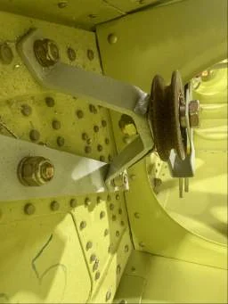

View photo ↗MODEL UNKNOWNFACTORY
Uncredited factory-manual example
Pulley beside the wing attachment structure
An internal view places the pulley beside the reinforced attachment area and adjacent rib opening, useful for understanding access before closure.
Aileron System / Pulleys
Bearhawk · Wing Build Manual Rev 2 · PDF p13
View original source ↗
Model unknown · Companion applicability unverified.